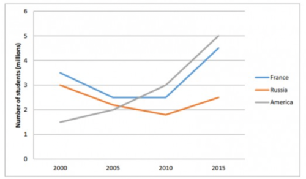

Đề bài
WRITING
WRITING TASK 1
The graph below shows the average number of Vietnamese students studying in France, Russia and America between 2000 and 2015.
Summarise the information by selecting and reporting the main features, and make comparisons where relevant.

Đáp án / dàn ý tham khảo
Overview: America rises markedly and finishes highest; France grows then levels off; Russia falls before a slight recovery.
Body 1: compare France and Russia. Body 2: describe the sustained rise in America and its final lead.
Bài làm
Submit your essay here:
Số từ: 0